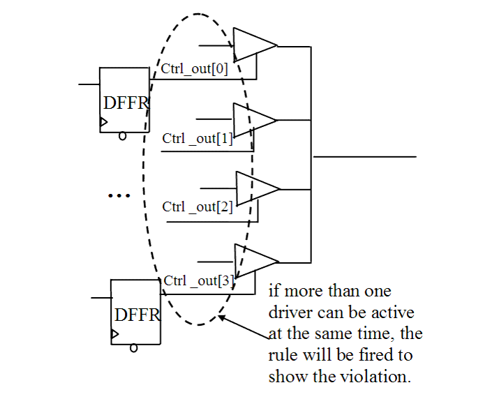

Description
Avoid bus contention. If the bus control signals are combinational one-hot encoded, this rule does not fire. However, if more than one driver is active at the same time, the rule flags an error. This rule does not analyzes the data driven by the bus, but only the control signals. The rule uses a formal engine and proves formally the one-hot encoding.Arguments: %s1 is the hierarchy name of contention point.%s2 - %sN is the hierarchy name of bus control signals.You can use the rule_set_parameter Tcl command to configure the below parameter:MAX_BACKTRACK - You can configure this parameter to set the maximum backtrack number that is allowed for formal engine to find the violation.STR90_ALLOW_BUS_HOLD - You can configure this parameter for Leda to ignore the violation when there is a bus hold cell driving the bus. If set to 1, LEDA ignores the violation when there is a bus hold cell driving the bus.
Policy
DESIGN
Ruleset
STRUCTURE
Language
VHDL/Verilog
Type
Hardware
Severity
Error
Here is some example of Verilog code, followed by a circuit diagram that illustrates the problem:
module ntl_str90_top (Clk, Rst, Ctrl, Din, Dout);
input Clk, Rst, Ctrl;
input [3:0] Din;
output Dout;
wire[3:0] Ctrl_out;
ntl_str90_sub1 U0(Clk, Rst, Ctrl, Ctrl_out);
assign Dout1 = Ctrl_out [0] ? Din1[0] : 1'bz;
assign Dout1 = Ctrl_out [1] ? Din1[1] : 1'bz;
assign Dout1 = Ctrl_out [2] ? Din1[2] : 1'bz;
assign Dout1 = Ctrl_out [3] ? Din1[3] : 1'bz;
endmodule
module ntl_str90_sub1 (Clk, Rst, Ctrl, Ctrl_out);
input Clk, Rst, Ctrl;
output[3:0] Ctrl_out;
reg[3:0] Ctrl_out;
always @(posedge Clk)
begin
if (!Rst)
Ctrl_out <= 0;
else
begin
if (Ctrl)
Ctrl_out <= Ctrl_out + 1;
else Ctrl_out <= 0;
end
end
endmodule
